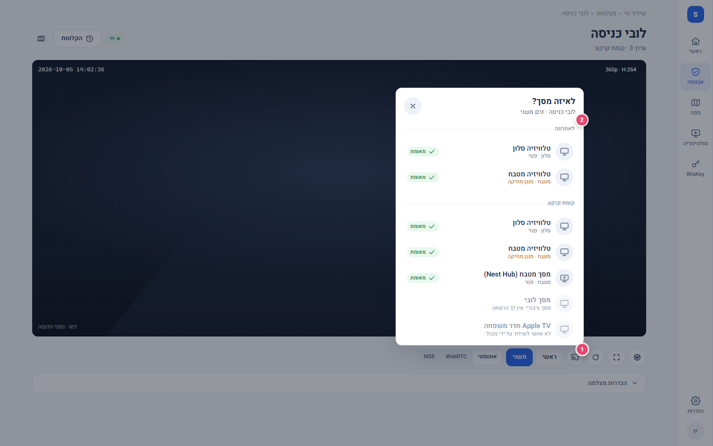
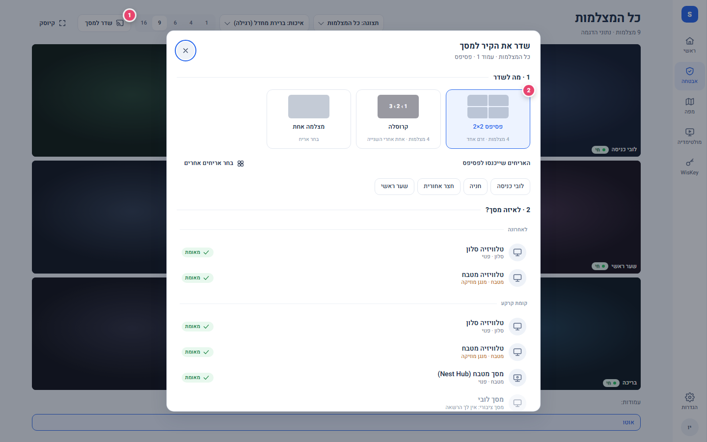
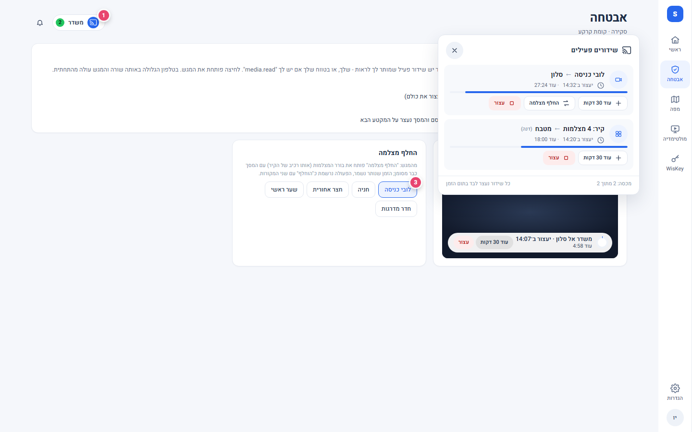
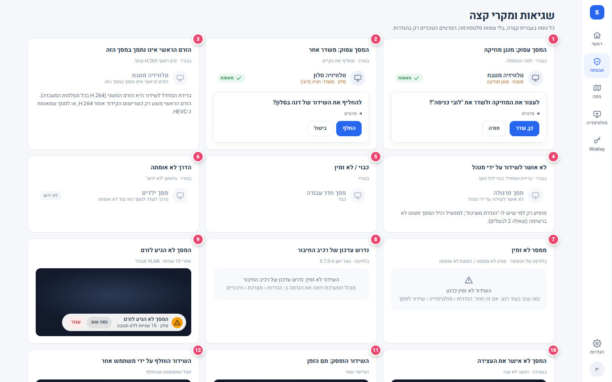
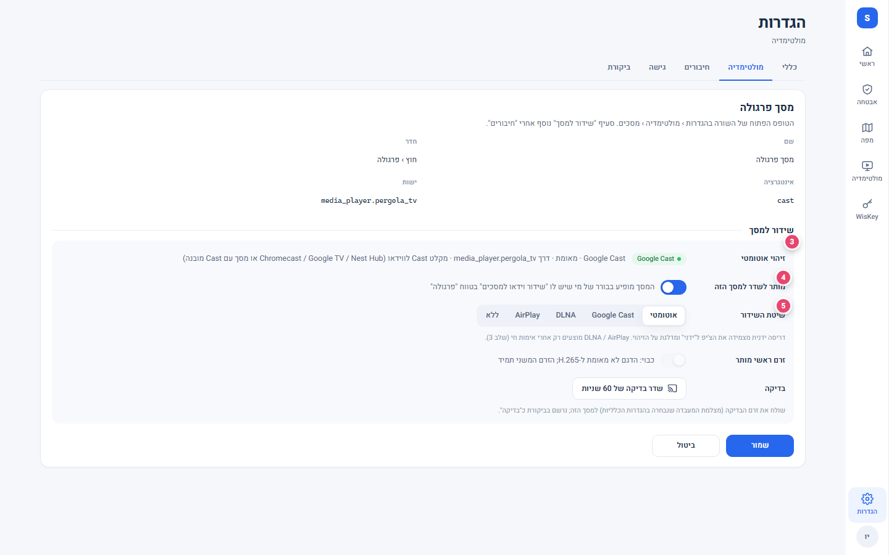
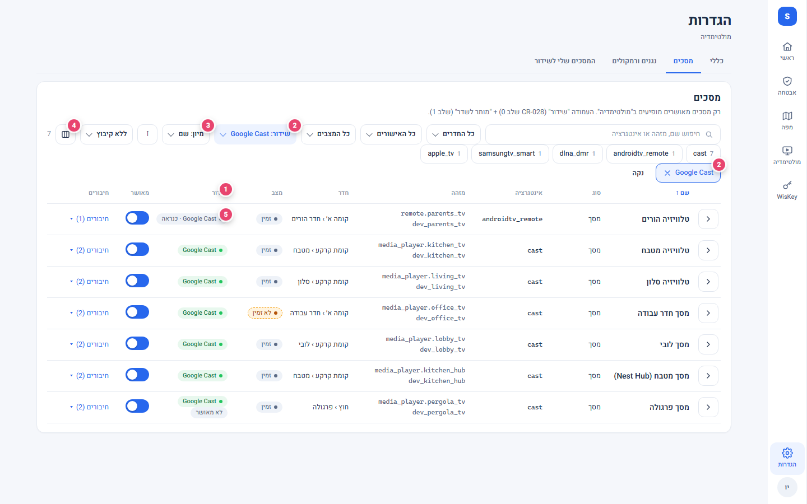
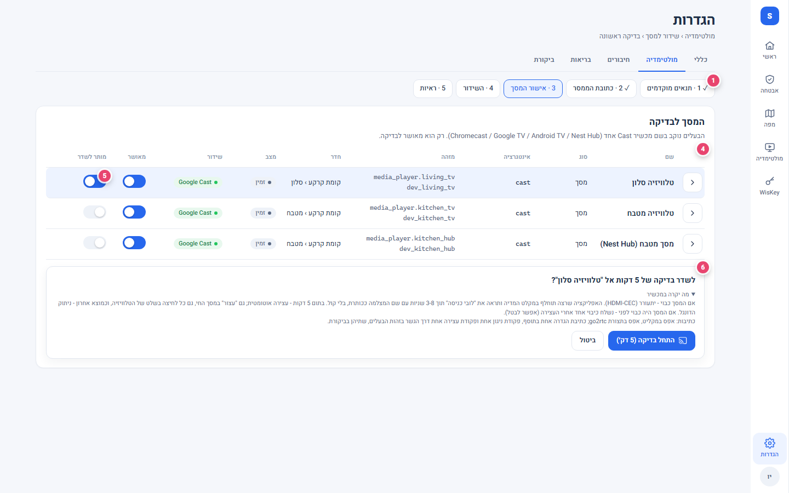

שדר למסך · מוקאפים אינטראקטיביים
הזרימה המלאה של שידור מצלמה או קיר למסך: מהכפתור במסך החי, דרך הבורר, מצב השידור, המגש הגלובלי, השגיאות, ההרשאות, ההגדרות והבדיקה הפיזית הראשונה. כל דף הוא HTML סטטי, בלי רשת, לחיץ; כל דף נפתח בכל שילוב של מסך (1440 / 1024 / 390), ערכה (בהיר / כהה), סקין (classic / bubble) ומצב (התפריט בסרגל העליון). העיגולים הוורודים הם מספרי ההערות שברשימה כאן; אפשר להסתיר אותם בסרגל.
איפה כל דבר יושב (תשובה לשאלה "לא ברור איפה")
דסקטופ 1440מצלמה: כפתור cast עגול בקבוצת הפקדים מתחת לווידאו, ליד "מסך מלא". קיר: כפתור "שדר למסך" בסרגל הפעולות ליד "קיוסק". בורר: פאנל מעוגן לכפתור. גלולת "משדר N": שורת הפעולות של כל מסך, ליד ההתראות. הגדרות: עמודת "שידור" בין "מצב" ל"מאושר".
טאבלט 1024אותם מקומות; הבורר - גיליון ממורכז. בהגדרות הטבלה נשארת טבלה אבל "חדר" ו"שידור" מקופלות כברירת מחדל - בקרת העמודות (אייקון העמודות בסרגל) מחזירה אותן, הבחירה נזכרת.
טלפון 390מצלמה: אותו כפתור עגול, 44 px. קיר: אייקון בלבד בשורת הסרגל האחת. בורר ומגש: גיליון תחתון עם גרירה לסגירה. הגדרות: כרטיסים; "שידור" היא שורה עם תווית אחרי "חדר".
1 · מצלמה בודדת
01-live-camera.html · 12 מצבים
- כפתור "שדר למסך" בקבוצת הפקדים העגולה ליד "מסך מלא" (36 px בדסקטופ, 44 בטלפון). קיים רק עם ההרשאה + לפחות מסך אחד זמין. בזמן שידור: כחול עם נקודה ירוקה, לחיצה פותחת את המגש.
- הבורר: "לאחרונה" ואז לפי קומה; כל שורה = שם, חדר · מצב, תג יכולת (מאומת / כנראה / לא ידוע). שורה חסומה: הסיבה במקום המצב (לא אושר על ידי מנהל / כבוי / לא אומתה / קודק / ציבורי).
- אישור "מסך עסוק": שאלה + "פרטים" מקופל (תבנית המולטימדיה). המוזיקה לא חוזרת לבד.
- שורת תחתית הבורר: "יעצור לבד אחרי 30 דקות" ו"וידאו בלבד".
- גלולת "מתחבר…" מעל הנגן, תחתית-התחלה.
- גלולת "משדר אל סלון · יעצור ב־14:32" עם טבעת התקדמות, "עוד 30 דקות", "עצור".
- גלולת "משדר 1" בשורת הפעולות (גלובלית) - פותחת את המגש.
- "המסך לא הגיע לזרם" אחרי 15 שניות: "נסה שוב" / "עצור".
- בלי הרשאה: אין כפתור, אין רמז.
- אין מסכים זמינים: מצב ריק עם הפניה למנהל.
- ממסר לא זמין: הודעה קצרה; הטכני בהגדרות.
- מרחוק (/arx): פס "מחובר מרחוק"; הלחיצה מכאן, השידור ברשת המקומית; לא נספר במכסה.

2 · קיר מצלמות
02-wall.html · 7 מצבים
- כפתור "שדר למסך" בסרגל הקיר ליד "קיוסק"; בטלפון אייקון בשורת הסרגל.
- בחירת פריסה: פסיפס 2×2 (4 האריחים הראשונים של העמוד), קרוסלה (כולם, N שניות לכל אחת), מצלמה אחת; ואז המסך.
- מצב בחירת אריחים: תיבות על האריחים, פס עם מונה ו"המשך לבחירת מסך".
- גלולת "משדר 1" בכותרת הקיר + פס מצב עם "עוד 30 דקות" / "עצור".
- תג "משדר" על כל אריח שבפסיפס.
- תצוגה מקדימה של מה שהמסך מציג (פסיפס עם שמות צרובים).
- קרוסלה: "עכשיו על המסך" על האריח הפעיל, "בתור" על השאר.
- התצוגה המקדימה בקרוסלה: הבאה בתור והזמן; 3-8 ש׳ שחור במעבר (כנה).
- מארח עמוס: הפסיפס מושבת עם הסיבה, הקרוסלה נשארת.
- שלב 1: אותו כפתור פותח "מצלמה אחת מהקיר".

3 · שידורים פעילים (המגש הגלובלי)
03-active-tray.html · 6 מצבים
- גלולת "משדר N" בשורת הפעולות של כל מסך; המגש: שורה לכל שידור עם טיימר, פס, "עוד 30 דקות" / "החלף מצלמה" / "עצור"; שידור של אחר מסומן בשמו.
- (ספירה לאחור חיה: 5 דקות, יורד כל שנייה, "תם הזמן" בסוף.)
- החלף מצלמה על אותו מסך בלי סשן חדש.
- (אחרי 8 הארכות הכפתור מושבת עם הסיבה.)
- "עצור את כל השידורים" למי שיש "פעולות גורפות", עם אישור שמונה את בעלי השידורים.

4 · שגיאות ומקרי קצה
04-errors.html · גלריה של 18 מצבים
- מסך עסוק: מנגן מוזיקה (אישור)
- מסך עסוק: משדר אחר (החלפה עם אישור)
- הזרם הראשי אינו נתמך (H.265)
- לא אושר על ידי מנהל
- כבוי / לא זמין
- הדרך לא אומתה
- ממסר לא זמין
- נדרש עדכון של רכיב החיבור
- המסך לא הגיע לזרם
- המסך לא אישר את העצירה
- תם הזמן
- הוחלף על ידי משתמש אחר
- נגמרה מכסת השידורים
- המסך לא זמין (נעלם)
- מסך ציבורי בלי הרשאה
- מרחוק (/arx)
- המוזיקה נעצרה
- המסך מתעורר (CEC) + כיבוי אחרי

5 · הרשאות, אישור מנהל, ביקורת
05-permissions.html · 3 מצבים
- המטריצה: מי רואה כפתור / בורר / מגש, מי עוצר, מי מאשר (לפי התפקיד וההרשאה).
- מפעיל מול צופה: הכפתור קיים או לא קיים (בלי רמז).
- סעיף "שידור למסך" בטופס המסך: הזיהוי + המשפט המלא.
- טוגל "מותר לשדר למסך הזה" (ברירת מחדל כבוי).
- דריסת שיטה אוטומטי / Google Cast / DLNA / AirPlay / ללא + זרם ראשי + שידור בדיקה 60 ש׳.
- שורות ביקורת: start / playing / extend / stop (סיבה) / denied (קוד) / config (היה → נהיה). בלי אסימון ובלי כתובת.

6 · הגדרות › מולטימדיה
06-settings.html · 7 מצבים
- העמודה "שידור" בין "מצב" ל"מאושר" (132 px); כותרת לחיצה = מיון.
- סינון "שידור: …" רב-בחירה בסרגל + צ'יפ פעיל עם X ו"נקה".
- "מיון: שידור": מאומת ← כנראה ← לא ידוע ← לא נתמך.
- בקרת העמודות (דסקטופ).
- הצ'יפ בשורה: ירוק מאומת / ניטרלי כנראה / מקווקו לא ידוע / "לא נתמך"; + "לא מאושר" כשמנהל לא הדליק.
- הטופס הפתוח: המשפט המלא + סעיף שלב 1.
- טאבלט: "שידור" מקופלת; בקרת העמודות מחזירה.
- "המסכים שלי לשידור": מה יופיע לי בבורר ומה לא ולמה.
- כרטיס "כללי": הדלקה, כתובת + "בדוק", משך, מכסה, זרם ראשי, מצב קיר, גרסת רכיב החיבור.
- "שידורים פעילים" של ההתקנה עם "עצור".

7 · הבדיקה הפיזית הראשונה במעבדה
07-lab-test.html · 5 צעדים
- סרגל הצעדים.
- תנאים מוקדמים שנבדקים בפועל: פורט, גשר 0.7.0, כתובת, גרסת go2rtc, רשת המסך. "טרם נבדק" ≠ "עבר".
- סעיף הכללי: "בדוק" מדליק את השידור רק אחרי אימות.
- הרשימה עם "שידור" ו"מותר לשדר".
- רק המסך שהבעלים נקב מודלק.
- האישור המפורש: מה יקרה במכשיר, איך עוצרים, אילו כתיבות (סעיף 8.3).
- מה המנהל רואה (5 דקות).
- מה הטלוויזיה מציגה.
- הראיות + "סמן כמאומת בפועל".

שאלות לבעלים
מיקום הכפתור במצלמה בודדת
- א · בקבוצת הפקדים העגולה ליד "מסך מלא" (כמו במוקאפ)
- ב · בשורת הפעולות של הכותרת, ליד "הקלטות"
- ג · בשניהם
צורת הבורר בדסקטופ
- א · פאנל מעוגן לכפתור (סגנון הדרופדאון של ההתקנה)
- ב · גיליון ממורכז כמו בקיר
ברירת המחדל לכל מסך
- א · כל מסך "מאומת" זמין לשידור מיד
- ב · מנהל מדליק "מותר לשדר" לכל מסך (כמו אישור התקן)
מסך חסום בבורר: להראות או להסתיר?
- א · להסתיר לגמרי (רשימה קצרה)
- ב · להראות אפור עם הסיבה (המפעיל מבין למה חסר)
- ג · להראות אפור רק למי שיש "הגדרת מערכת"
איפה יושבת "המסכים שלי לשידור"
- א · לשונית בהגדרות › מולטימדיה + קישור מתחתית הבורר
- ב · רק מתחתית הבורר
- ג · בתפריט המשתמש
משך ברירת המחדל והספירה לאחור
- א · 30 דקות, "עוד 30 דקות" עד 8 פעמים
- ב · 15 דקות
- ג · 60 דקות
קיר (שלב 2)
- א · פסיפס 2×2 + קרוסלה כגיבוי
- ב · קרוסלה בלבד (בלי קידוד מחדש)
זמן לכל מצלמה בקרוסלה
- א · 10 ש׳
- ב · 15 ש׳
- ג · 30 ש׳
- ד · לבחירת המשתמש (כמו במוקאפ)
גלולת "משדר N" הגלובלית
- א · בשורת הפעולות של כל מסך, ליד ההתראות
- ב · רק במסכי השידור החי
- ג · בפס העליון של המעטפת (קבוע)
כיבוי המסך אחרי העצירה (כשהיה כבוי לפני)
- א · כן, כברירת מחדל (אפשר לבטל בהגדרות)
- ב · לא, אף פעם
המכשיר לבדיקה הפיזית הראשונה
- א · Chromecast / Google TV
- ב · Android TV
- ג · Nest Hub
- ד · אחר (לנקוב בשם)
שידור בדיקה של 60 שניות מהטופס בהגדרות
- א · כן, למנהל בלבד
- ב · לא צריך, הבדיקה מהמסך החי מספיקה
גבולות כנים
עיצוב בלבד: אין קוד מוצר, אין ממסר, אין גשר, שום מכשיר לא נגע. הסקינים: classic ו-bubble מיושמים (טוקנים מ-tokens.ts ומ-bubble-skin.css); domus ו-tesla לא נבנו כאן. הטבלה בהגדרות היא העתק ויזואלי של media-admin-list, לא הרכיב עצמו. הבורר מצויר כפאנל פשוט ולא בששת סגנונות sw-dropdown. התזמונים (3-8 ש׳, 15 ש׳) הם המחלקות שבמסמך ה-CR, לא מדידות. צילומי המסך: Playwright Chromium על הקבצים הסטטיים; לא נבדק בטלפון אמיתי או ב-Safari.